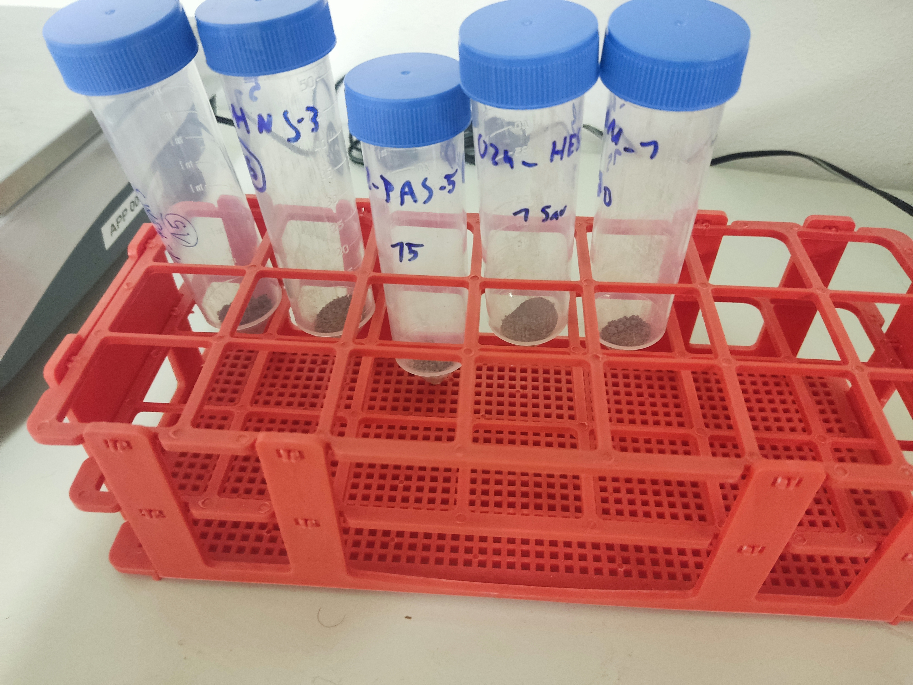
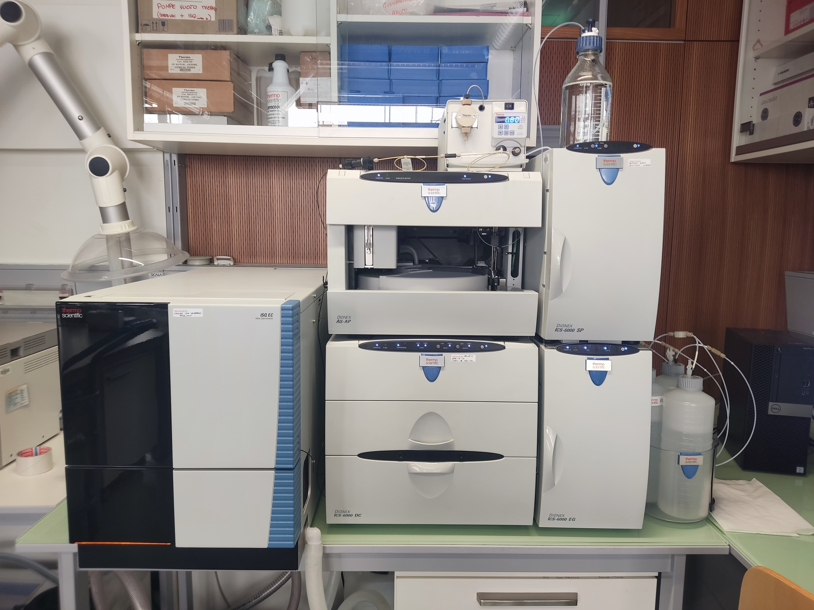
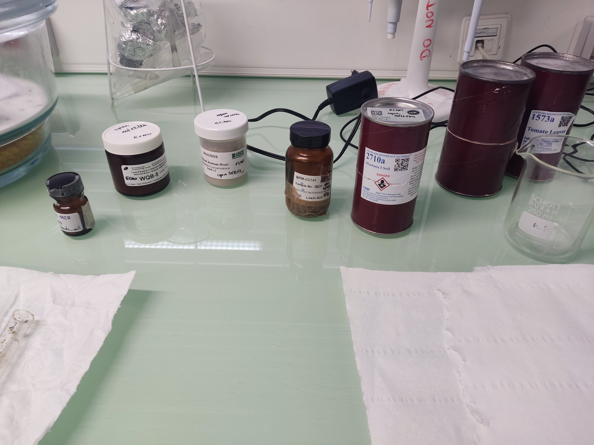
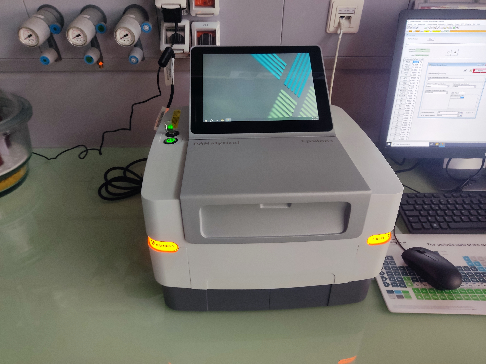
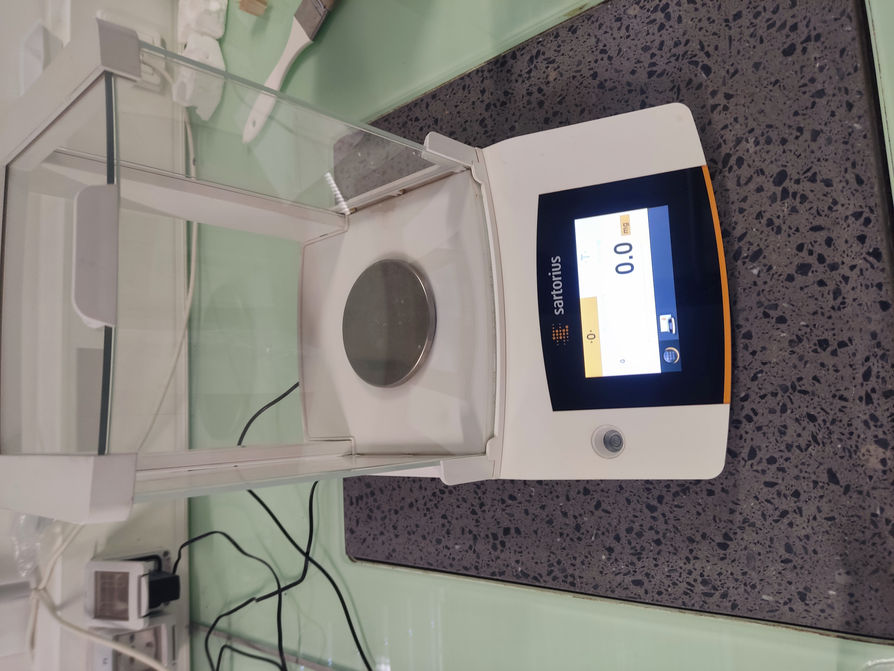
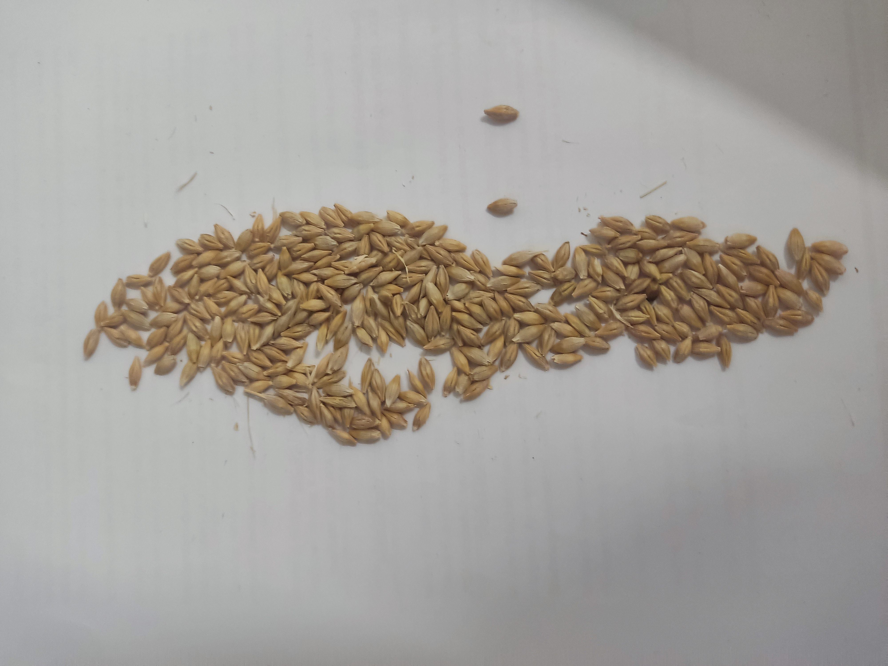
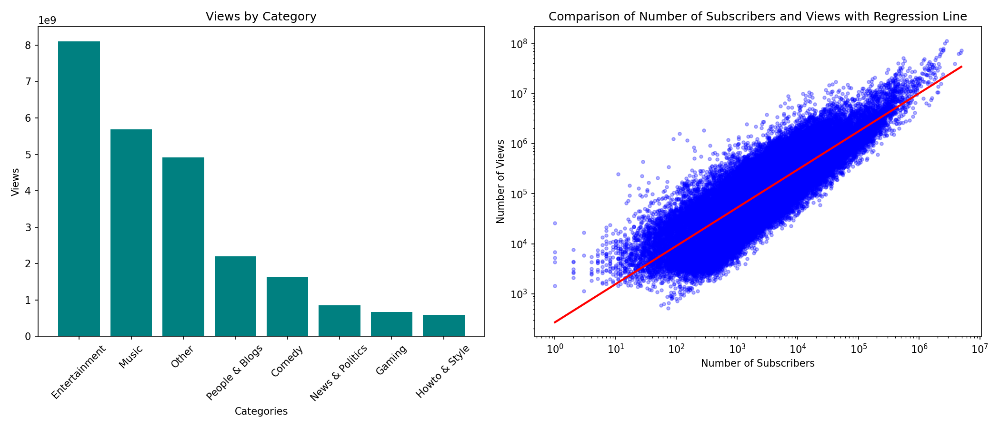

Selbstbetrachtung
Ich, Schule und Arbeit
Präsentiert von
Tobias Weiss
Schule
Realgymnasium Meran
Datum
xx.xx.2026
Lebensweg
2006
Geburt
Meran
2013
Grundschule
Lana
2018
Mittelschule
Lana
2021
Oberschule
Realgymnasium Meran
Steckbrief
Lernmethode
Karteikarten
Persönlichkeitsprofil
Neugierde
Analytisches Denken
Reife
Auffassungsgabe
Hilfsbereitschaft
Gelassenheit
Kreativ
Geduld
Teamfähigkeit
Motiviert
Zielstrebigkeit
Außerschulische Aktivitäten
Theologie
Top 10 national
Schach
Platz 11 National
Mathematik
Platz 2 Regional / Nat. qualifiziert
Physik
Platz 4 Regional
Chemie
Qualifiziert für Regionale
Teilnahme
Regional
National
Sieger
Schule & Arbeitswelt
Der Schritt in die praktische Forschung an der Universität
Praktikumsübersicht
Universität Bozen
Fakultät für Agrar-, Umwelt- und Lebensmittelwissenschaften
Zeitraum
Februar 2025 (2 Wochen)
Institution
Freie Universität Bozen
Vorgesetzte
Tanja Mimmo
Tätigkeiten
Laborarbeit und Datenverarbeitung
Praktische Laborarbeit
Aufgabenbereich
1
Probenvorbereitung
- Schälen von Gerstensamen
- Präzises Wiegen von Bodenproben
2
Probenaufschluss
- Säureaufschluss
- Probenzerkleinerung
3
Analytik
- ICP Massenspektrometrie
- Röntgenfluoreszenzanalyse (XRF)
- HPLC Chromatographie

Bodenproben
HPLC Analytik
Standards
XRF Spektrometrie
Präzisionswaage
GerstenkreuzungInformatik & Coding-Demo
Dateibrowser
automated_literature_search.py
analyse.R
moodle_solver.py
# Dateicode wird dynamisch geladenKlicke oben auf "Skript ausführen", um das geladene Skript zu testen.
Führe 'analyse.R' aus, um den Daten-Plot zu laden.

about:blank